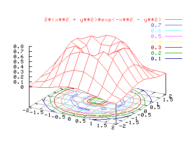
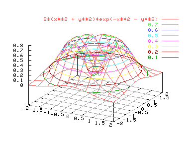

Las líneas de contorno también facilitan la visualización de gráficos tridimensionales. Pueden elegirse que aparezcan en un plano, al estilo de líneas de nivel, o directamente sobre la propia gráfica. Los comandos relacionados con las líneas de contorno son los siguientes:
set contour base. Dibuja líneas de contorno en un plano en la base de la gráfica.
set contour surface. Dibuja líneas de contorno sobre la propia figura.
set contour both. Dibuja las líneas de contorno tanto en la base como en la figura.
set nocontour. Se deja de dibujar las líneas de contorno.
La opción "set contour surface" no está disponible si también se quiere usar hidden3d. A continuación se muestran un par de ejemplos:
set hidden3d
set contour base
splot [-2:2] [-2:2] 2*(x**2 + y**2)*exp(-x**2 - y**2)

set nohidden3d
set contour surface
splot [-2:2] [-2:2] 2*(x**2 + y**2)*exp(-x**2 - y**2)

Si únicamente se desean las líneas de contorno, la opción "set nosurface" hará realidad nuestros deseos. Para más información, consúltese "help set surface". La forma en que se dibujan las líneas de contorno puede variarse con la opción "cntrparam". Por ejemplo si sólo interesan las líneas de contorno para z=.2,.4,.6, se puede conseguir escribiendo el siguiente comando antes de dibujar la gráfica:
set cntrparam levels discrete .2,.4,.6
Para más información consúltese la ayuda en línea.